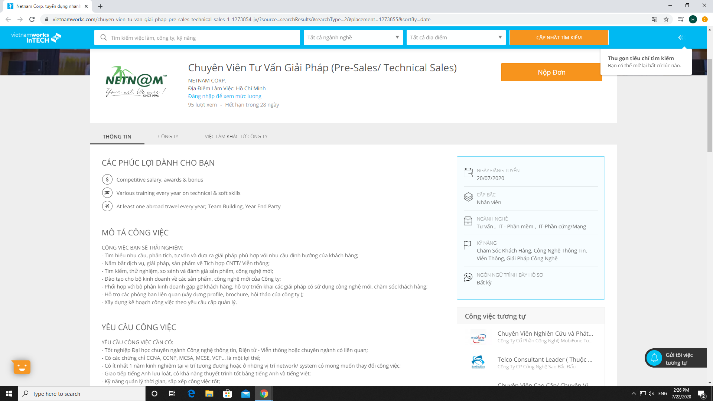
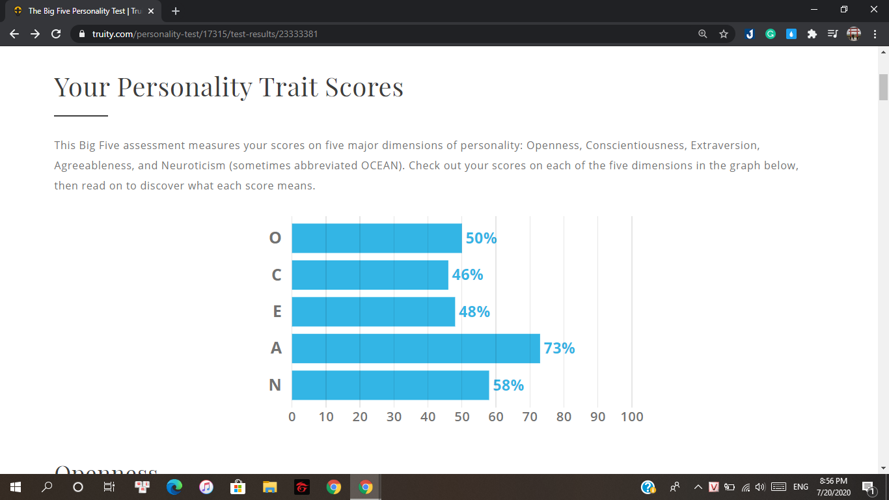

Name: Nguyen Thanh Huy Day of Births: 19 August, 2000 Student ID: S3836219 Email: thanhhuynguyen1908@gmail.com National: Vietnam Spoken languages: Vietnamese, English
Name: Nguyen Thanh Huy Day of Births: 19 August, 2000 Student ID: S3836219 Email: thanhhuynguyen1908@gmail.com National: Vietnam Spoken languages: Vietnamese, English
Can Gio is my hometown which is an outskirts of Ho Chi Minh city which is a biosphere reserve listed by UNESCO. Because of the poor transportation system especially waiting for the ferry, it takes me longer than others to go to school or downtown. However, it is not a very well-known tourist destination for international visitors but it appeals to huge citizens who live in HCMC for relaxing because of the great environment and delicious food. Besides, I used to immerse myself in video games a lot and my health became worse when I was in high school but I have changed it due to exercising with my friends. My body transferred gradually and my health markedly improved. Because of that reason, I am not interested in games anymore and instead of playing games, I usually do some exercise such as running, going to the gym and I just consider games as an entertainment thing which makes me relax after a busy day.
IT is a highly developed industry currently and everything in our daily lives is related to it which can help us improve our lives. IT also has a diverse field that depends on people’s characteristics and interests to choose the suitable one and I honestly think that I haven’t entirely found a field that I want to immerse myself in. However, computers, websites, and security are some of the fields that I might feel interested in. Since I was a kid, my parents owned a small computer gaming store that was not as popular as nowadays but it attracted lots of people at that time because of the development of technology increases and led me to access some basics of the technology and computers. Gradually, I learned a lot about computers from helping my parents manage the store and when I saw my dad work together with the IT guys to fix computer problems such as reassembling the computer and doing some stuff about the software, I was instantly inspired at that time.
RMIT is an international university which is considered one of the best universities in Vietnam. Firstly, I chose RMIT for studying because the curriculum’s RMIT is entirely in English which is the most popular language currently and English is an essential language with the young generation to have a good job. Secondly, because of studying in the international environment, not only learning English skills but also acquiring a lot of soft, technical skills and experience which can help us gain more opportunities to approach with the international companies.
Before studying IT at RMIT University, I just had a little understanding of IT from some of the lessons from high school which was some basic skills and introduction without any specific knowledge in any aspect. Therefore, I literally expect to learn as much as possible to improve my skills and get more foundation knowledge in the IT industry. Moreover, I hope that I could find a suitable field which I am very interested in and immerse myself in which does not make me regret because of choosing the wrong way after graduating.

This is absolutely not a great job in the IT industry but this position attracted me instantly after I read through the job information. The most important thing that makes me appeal with this position is that technical sales is one of the potential jobs currently in this industry which could move the ladder rapidly depending on your interests and opportunities. Besides, I’m not very interested in sitting and working in front of the computer all the time and prefer to travel around so choosing this position is a great idea. Moreover, Netnam Corporation is a pioneer in providing Internet services in Vietnam for more than 25 years in this industry and a lot of different awards or bonuses which make this position more attractive for me.
I don’t have any much skills, experience or qualifications about the IT industry because I'm just a newbie who has a little interest in technology with some of the basic skills and knowledge which I have learned in high school. However, I have a few experiences about hardware like computers stuff and selling IT products especially smartphones and some stuff related to it from my parents business. I have supported them selling and trading products with the customers so my communication skills are not too bad.
Although my communication skills are acceptable, I need to develop my English skills which are really important for this job. Besides, I have to focus more in class and absorb all of the skills from the course of IT to get as much knowledge as possible. Moreover, I will gain my experience by engaging in some of the internship programmes while studying at school and contact more people to improve my communication skills as well as learn more about technical and scientific products.


